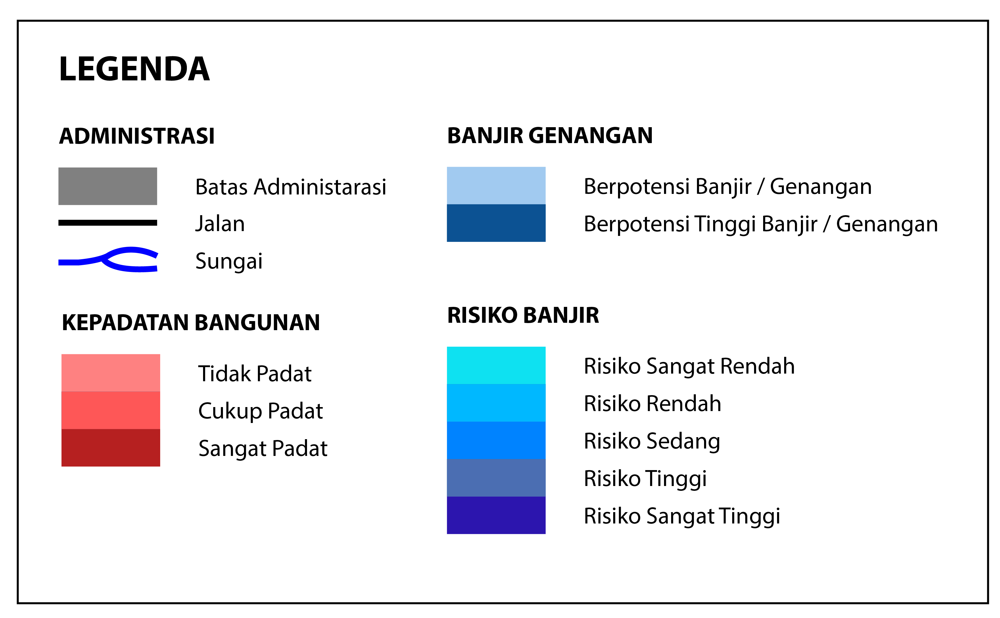

Peta berbasis WEB ini disederhanakan dari Bootleaf Template bmcbride Dengan memanfaatkan perpustakaan Bootstrap , Leaflet dan typeahead.js. Sehingga aplikasi ini tidak berbayar sesuai dengan prinsip Open source dan MIT licensed.
| Website | https://openstreetmap.id/ |
| mukhlisakb@gmail.com | |
| Telepon/SMS/WhatsApp | 0812 8691 0411 |
| Mukhlis Akbar | |
Segala Bentuk data yang dipublikasikan dalam web ini sifatnya terbuka dan bebas dimanfaatkan kecuali tujuan komersialisasi.
Siapapun bebas mengakses data yang tersedia dan memanfatkanya baik dengan mencantumkan sumber web ini.
Develop WebGIS
Bangunan Kota Pontianak Hot Export Tools Download OSM Data
Batas Adminstrasi Kecamatan Dan Kabupaten Bappeda Provinsi Kalimantan Barat
Lokasi Bangunan
